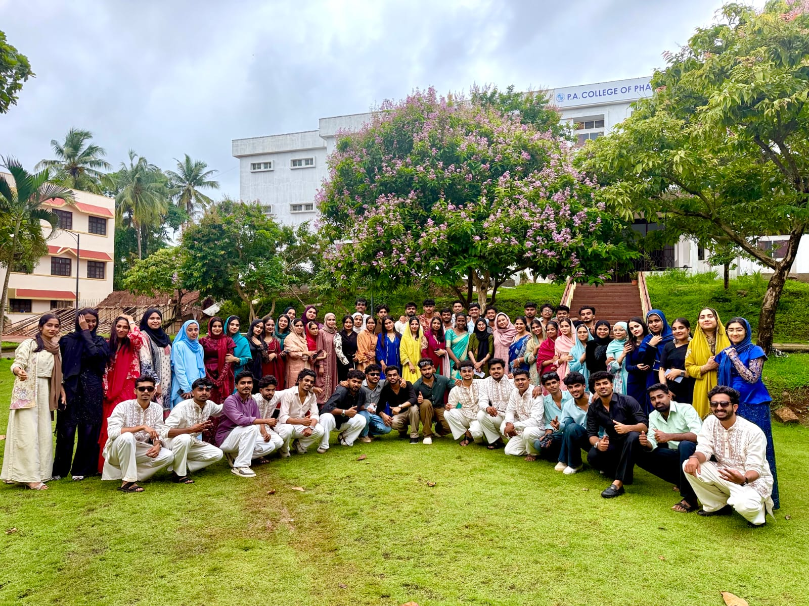

Between classes
Those quick conversations that somehow lasted longer than the lecture.
Opening our memory book…
Some chapters end quietly.
Ours deserves a standing ovation.
Tap the button • turn the page • relive the journey
BEFORE THE GOODBYES
Between lectures, presentations, deadlines and those “one more minute” conversations, something unexpected happened — ordinary days became memories worth keeping forever.
THE LITTLE THINGS
Those quick conversations that somehow lasted longer than the lecture.
The plans that were never really plans — and became the stories we still talk about.
Pressure, teamwork, laughter and the relief after the final slide.
Words that made no sense to anyone else but meant everything to us.
THE DAYS WE LEFT CAMPUS
IV days, shared rides, random photos, food stops, tired faces and uncontrollable laughter. We didn't know then how much we'd miss the simplest parts.
THE PART WE SHOULD NEVER FORGET
Different teams, personalities and dreams — but when someone needed help, we showed up. That quiet unity is one of the most beautiful things our MBA gave us.
A REAL MEMORY

One frame. A thousand stories.
THE WORLD IS WAITING
May every dream find its way to you. May your work make you proud, your people make you happy, and your future be bigger than the plans you made in college.
“Different paths. Different dreams. Different destinations. But this chapter will always belong to all of us.”
Thank you for every laugh, every challenge, every adventure and every ordinary moment that became extraordinary because we shared it.